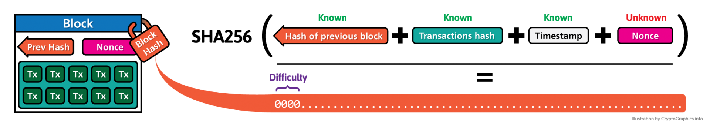

Bitcoin as a first system named "blockchain"
2008, Satoshi Nakamoto whitepaper
A blockchain is a growing list of records, called blocks,
which are linked using cryptography. Each block contains a
cryptographic hash of the previous block, a timestamp,
and transaction data (generally represented as a merkle tree
root hash).
definition by Wikipedia
What it was supposed to solve is a double-spending problem for digital currency using a peer-to-peer network.
Its goal was to provide a usable high-volume payment system.
Great analogy would be git!
Bitcoin blockchain vs git
What it stores?
git - snapshot of the system in time
Bitcoin - transactions history
How it creates the chain?
Both are using cryptographic hash functions.
Bitcoin additionally uses asymmetrical cryptography for transaction signing
and leverages a Proof Of Work algorithm
Does it allow branching?
Git does
Bitcoin - not really
Blockchain is supposed to be immutable, its transactions are not reversable
Where is the cryptography involved?
How does the Proof Of Work algorithm work?

source: cryptographics.info
How does the consensus mechanism work?
What does it mean to send transaction to the blockchain network?
What does it mean to have network confirmations?
How the nodes communicate between each other?
What is the nodes discovery mechanism?
Can I keep by Bitcoins on my pendrive?
Blockchain challenges
Throughput - relies on block generation interval and maximum size of blocks